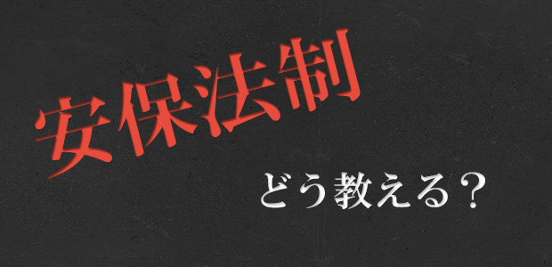

高校生に世界史を教えているとよく問われる質問の一つにこんなものがあります。
例えば十字軍を教えているとき、エピソードとして当時の人々が書いた手記を紹介すると、多くの生徒が血の気の引いた顔をします。殺戮に次ぐ殺戮。現代の我々からすれば、もう同じ人間とは思えないような蛮行の数々に、恐怖というよりも「うんざりした感じ」をおぼえるのかもしれません。生徒たちは本当に不思議そうに「なんで宗教戦争ってここまで殺しあうんですかね」と尋ねるのです。
この問いはとても答えるのが難しいものです。宗教に「本気」になることが少ない我々日本人にとって、信仰のためならばなんでもする、というメンタリティは理解しがたいでしょう。それは当然です。しかし、一方で、「この世界には創造主がいて、その導きに従うことが善である」と心の底から信じている人にとっては、神の教えに従わない人は「救ってあげるべき」人であり、その人々に対する働きかけは、信仰の純度が高ければ高いほど純粋で断固としたものになります。そんな彼らからしてみれば「他者の信仰を認める」ということは、自身の神を心の底から信じていない証拠にみえるでしょう。
現代の私たちは「絶対正しいなにか」という概念を喪失した世界に生きています。子供向けのゲームや漫画ですら、昔のような完全無欠の悪役は出てこなくなりました。つまり、どんな悪役に対しても「こいつにはこいつの正義があるんだろうな」と想像するようになり、問答無用の断罪をすることは出来なくなってしまったのです。
そんな時代において、「自分の意見を主張する」ことはとても難しい営みになります。ある意見を述べた時、その意見を主張しながらも同時並行的に反対意見の妥当性も考慮に入れているわけですから、どうしても歯切れが悪くなってしまいます。
最近話題の安保法制に関するニュースを見ながらそんなことを考えました。賛否どちらの意見も理解できるし、納得することができます。自分の意見はもちろん持っていますが、それが反対意見よりも「絶対に正しい」と強く信じて主張することができないのです。
高校生の頃、サルトルの哲学を解説した本を読み、「投企」という考え方を知りました。行動することで自らを歴史の中に投げ入れる営み。何事にも自身の意見をはっきりと述べ、傍観するのではなく参加すること。実際サルトルは生涯をかけて様々な事件に対して自分の意思を表明し、行動しました。この「投企」を知ったときにはしごく簡単に感じたものです。自分の意見をはっきりと述べ、行動すること。できるできる、と。しかし、今になって思えば、何と難しいことか。
安保法制について授業をしてほしいと生徒にリクエストされたとき、とても困りました。自分の意見を表明すべきか、しないべきか。もし自分の意見が「正しい」と心の底から思うのならば、宗教戦争の例で述べたように、自身の意見に賛同するよう生徒たちに強く働き掛けるべきです。正直なところ、私にはそれほど強く「正しい」と思える意見を持つことができませんでした。結局授業は核心の部分には触れずに、安保法制が問題になっている背景を解説するにとどめましたが、なんとなくしっくりしない感が残ります。意見を言うこと、そして、教えることって本当に難しい！